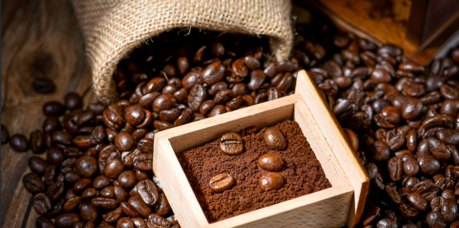

非洲产区
以埃塞俄比亚和肯尼亚为代表。通常具有明显的花香和水果酸质。耶加雪菲的茉莉花香、肯尼亚的番茄与莓果酸，是入门精品咖啡的首选。
从一颗生豆到杯中醇香，经历的是火与时间的艺术。

咖啡樱桃采摘后，需要经过处理才能取出种子（即咖啡豆）。最常见的处理法有日晒、水洗和蜜处理。日晒法通常带有热带水果的奔放香气和较高的甜度；而水洗法则更加干净明亮，酸质优雅，更能体现产区的地域之味（Terroir）。
近年来，厌氧发酵等实验性处理法也开始流行，为咖啡带来了肉桂、朗姆酒等独特的特殊风味，深受猎奇的大学生爱好者欢迎。

烘焙是将生豆转化为熟豆的关键过程。浅度烘焙（Light Roast）保留了最多的花果香和酸度，是手冲咖啡的主流选择；中度烘焙（Medium Roast）则平衡了酸与苦，带有坚果、焦糖的香气。
深度烘焙（Dark Roast）则几乎掩盖了豆子原本的风味，带来浓烈的烟熏与黑巧克力味，通常用于制作意式浓缩咖啡，以确保在加入牛奶后仍有足够的咖啡感。
以埃塞俄比亚和肯尼亚为代表。通常具有明显的花香和水果酸质。耶加雪菲的茉莉花香、肯尼亚的番茄与莓果酸，是入门精品咖啡的首选。
以巴西、哥伦比亚、巴拿马为代表。整体风味平衡，口感醇厚，多带有坚果、巧克力、红糖的甜感。巴拿马的瑰夏（Geisha）更是豆中贵族。
以印度尼西亚（曼特宁）和中国云南为代表。印尼豆通常带有草药、香料和泥土的厚重感；而云南咖啡近年来品质飞升，正成为国货之光。